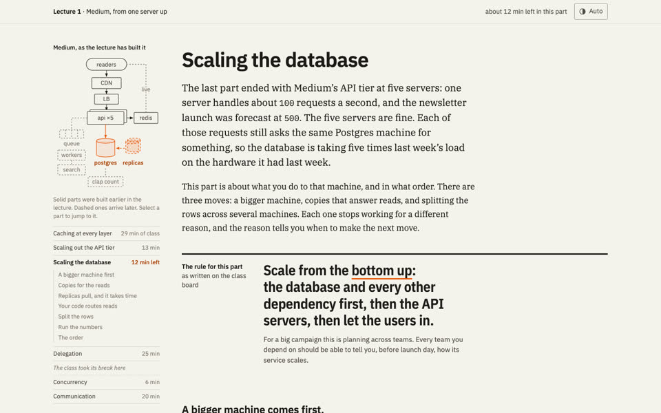
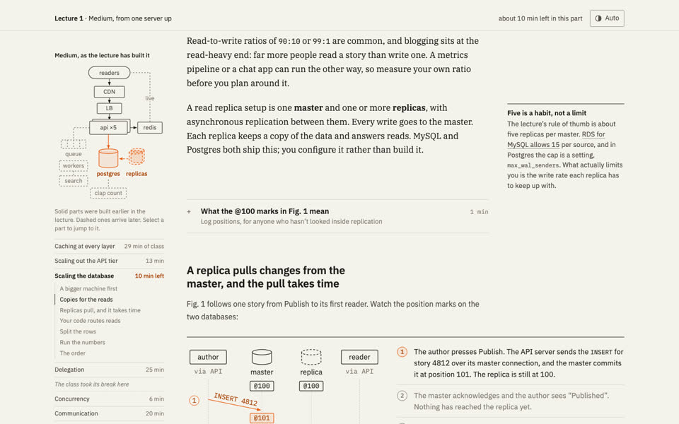
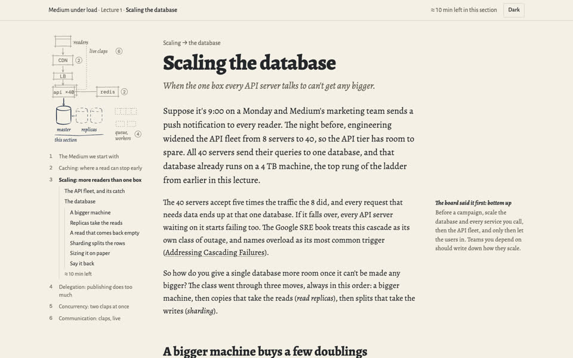
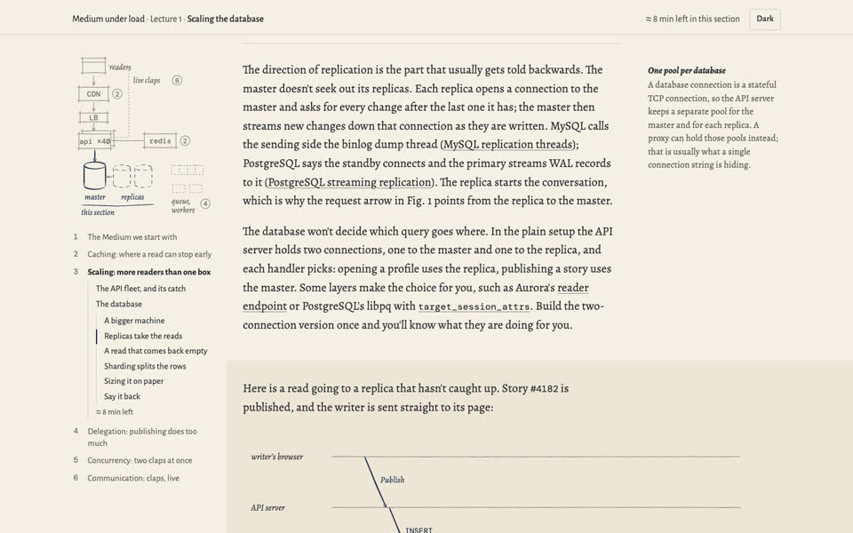
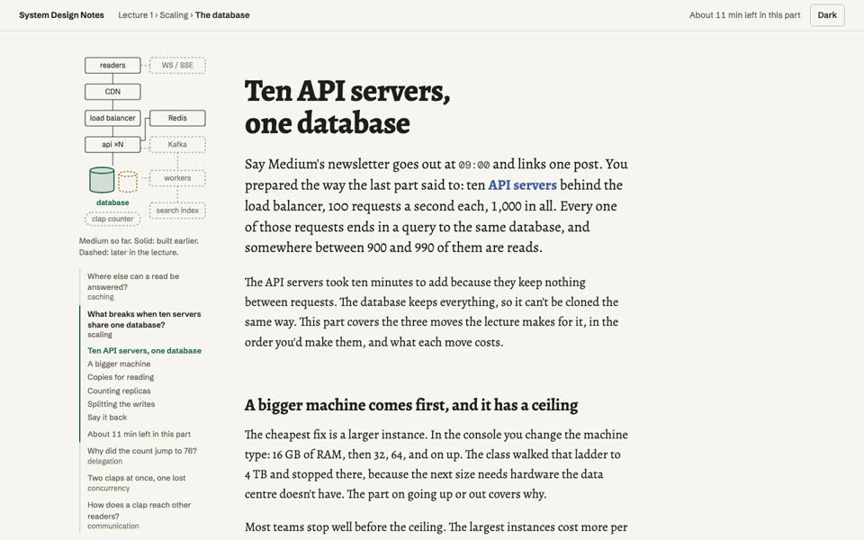
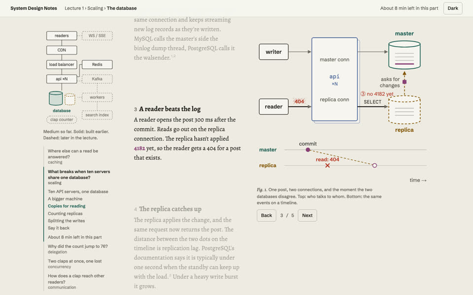
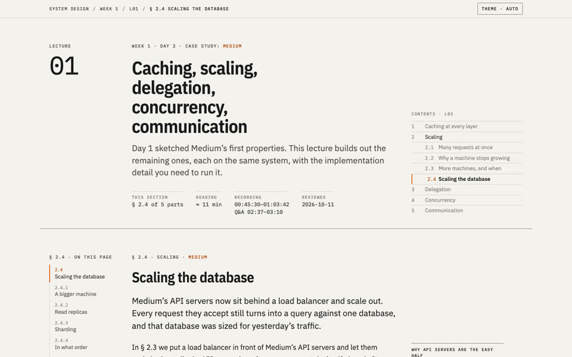
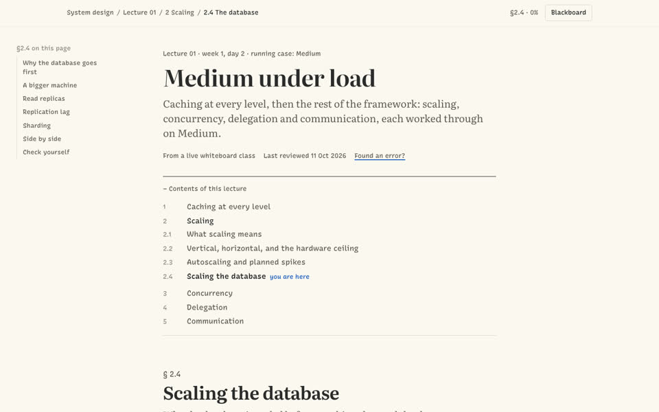
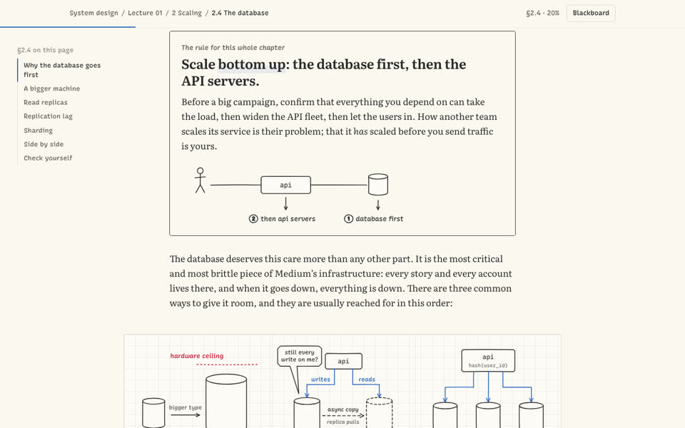

Three looks for the same section, second round
Each sample is a real, working build of one section, "Scaling the database", written from the lecture's knowledge ledger. Only the design differs. Open each one, scroll it, click through its diagram, try dark mode and a narrow window.
Every sample has the same parts: lecture header and contents, the Medium framing, the "scale bottom up" rule, a system diagram redrawn from the 00:56 board, a step-through replication figure, a pause-and-think prompt, a sourced fact from the PostgreSQL docs, a clip placeholder, a trade-off comparison and recall questions.
Round 2
What changed for all three: a design critic listed what made round 1 look generated (the same skeleton and stock labels in every sample, label-heavy headers, decorative numbers, a replication arrow drawn backwards), and a learning-science review picked the patterns that keep engineers reading and remembering. Each page now opens on a Medium incident with numbers, uses the growing Medium diagram as its navigation, asks you to predict before it explains, corrects a real wrong turn from the class, works a back-of-envelope example, weaves fact-check corrections in with sources, and ends with recall and an honest "minutes left".
Spec Sheet, warmer
Same datasheet precision, now with a serif body, one label style, and the lecture map in a side rail with real minutes per part.


Better
- Opens on the class's own numbers (5 servers, 100 requests a second each)
- The rule from the board gets a strong, quiet moment of its own
- Ends on a worked resharding cost: 75% of users move with mod-N, about 25% with consistent hashing
Still weak
- Still dense in places
- Map parts don't link anywhere yet
Fountain-pen notebook
The Excalidraw look is gone. Strokes thicken and taper like ink; pencil marks earlier context, ink the current focus, red pencil what breaks.


Better
- The most distinctive of the six; looks like one person drew it
- Margin notes carry the side facts so the main text stays readable
- Swim-lane figure shows a read reaching a replica before it has caught up
Still weak
- Opening incident (8 to 40 servers) is a made-up scenario, not the class's numbers
- Figures are drawn by script; one label near-overlaps and a circle clips on phones
Essay, tightened
Renamed "System Design Notes", decorative numbers removed, the scroll figure tightened so screens no longer sit empty. Section titles are now questions.


Better
- Navigation reads as the questions the lecture answers ("Why did the count jump to 76?")
- Coloured terms in the text match the parts in the figure
- A 99:1 / 90:10 toggle reruns the replica-count example
Still weak
- On phones the pinned figure takes about 40% of the screen
- Map placement is hand-tuned per section
One rule for the real build, whichever you pick: any opening scenario must use the lecture's own numbers or be labelled as an example. B2 and C2 both invent slightly different server counts.
Round 1, kept for reference
Spec Sheet
A precise engineering datasheet. Grey on paper, one orange for focus, red only for failure, margin notes beside the text.


Strong
- Reads as rigorous and senior
- Margin notes hold the worked numbers and caveats without breaking the flow
- Easiest to keep consistent over six lectures
Weak
- Cold; feels like a manual late at night
- Margin notes fall inline below 1240px, so most laptops get the busier version
- Small mono labels on phones
Whiteboard Notebook
The best engineer's notebook. Serif text, precise hand-feel diagrams on graph paper, three markers with fixed meanings: blue for the request path, red for failure, green for success.


Strong
- Clearly comes from a whiteboard class, so it has an identity no template has
- Diagrams are the clearest of the three and closest to what was drawn
- Warm enough to read for an hour
Weak
- One sloppy figure makes the whole site look childish; needs a strict figure kit
- Large figures need a separate phone layout
- Only three colours, so shards and requests need numbering instead
Explorable Essay
A long-form essay with a figure that stays on screen and changes as you scroll. Each system part owns one colour in both text and figures.


Strong
- Most elegant typography
- Text and figure linked by colour: "master" in the text is the master's colour in the figure
- The scroll-driven figure is memorable
Weak
- Most expensive to build, per figure, per lecture
- Adds about 3,000px of scroll per mechanism; skimmers see states they didn't read
- Under 1100px the signature effect becomes a plain stepper
Round 1 note: why I leaned to B
Your goal is a page that teaches a whiteboard class and doesn't look generated. B is the only direction whose look comes from the subject itself, and its diagrams are the clearest of the three.
Its risks are real but fixable with rules, not luck.
What B would borrow
- From A: margin notes for worked numbers and caveats, and one strict signal colour for "look here now"
- From C: numbered labels that tie a word in the text to a part in the figure
- A fixed figure kit (one stroke weight, one wobble setting, shared shapes) so twelve figures look like one hand drew them
- A separate phone layout for every large figure
These are samples, not the final page. Whichever you pick becomes the design system, gets the borrowings you approve, and is then reviewed by the design critic and the learner tester before the full lecture is built.